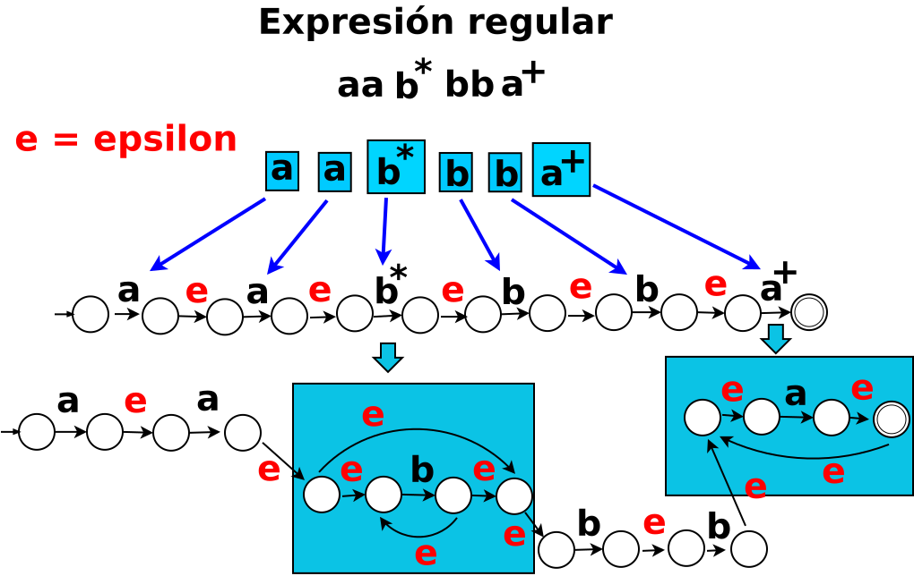
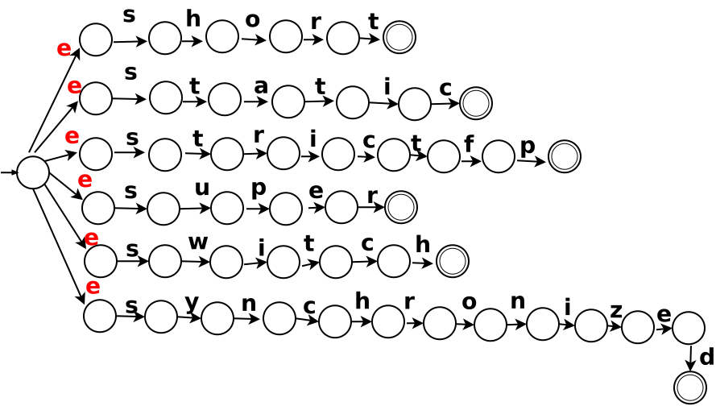
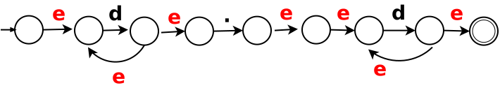

Objetivo
Implementar un procedimiento para convertir un AFN en un AFD.
Actividades
Actividad 1. Considerar el algoritmo de subconjuntos para realizar la conversión de un AFN en un AFD.
Actividad 2. Considerar los autómatas AFN para aplicar el algoritmo de subconjuntos.
Cuestionario
Pregunta 1. Entregar un procedimiento para convertir el AFN de la siguiente figura en AFD aplicando el algoritmo de subconjuntos.
Pizarrón, archivo dia: SNCompiladores/Pra3Pre1.dia

Pregunta 2. Entregar un procedimiento para convertir el AFN de la siguiente figura en AFD aplicando el algoritmo de subconjuntos.
Pizarrón, archivo dia: SNCompiladores/Pra3Pre2.dia

Pregunta 3. Entregar un procedimiento para convertir el AFN de la siguiente figura en AFD aplicando el algoritmo de subconjuntos..
Pizarrón, archivo dia: SNCompiladores/Pra3Pre3.dia
